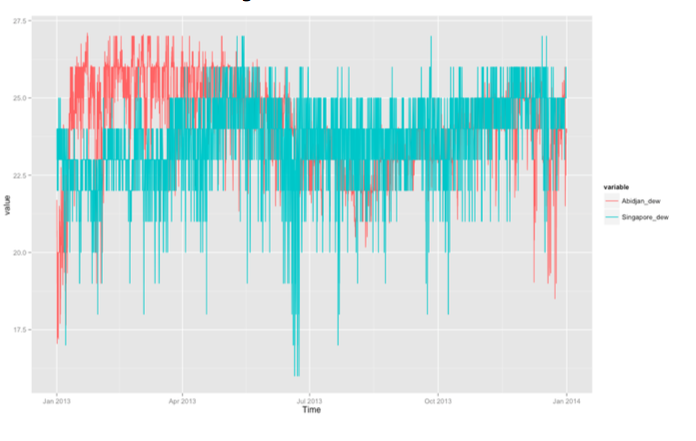

Your browser doesn't support the features required by impress.js, so you are presented with a simplified version of this presentation.
For the best experience please use the latest Chrome, Safari or Firefox browser.
MOTIVATION...
Developing
VS
Developed
MOTIVATION
• The demand in developing country is increasing much faster than the demand in developed country. Such kind of increasing may not only because of the population growth.
• We should also consider economy growth.
GDP Growth Comparison
Note
• Economy growth is low in developed countries like US, Australia, but is much higher in developing countries.
• Economy growth is stable in developed countries, but is less stable in developing countries.
• As a result, the influence brought by economy growth cannot be modeled by a "trend" part in time series model (because it's highly volatile).
How to model the influence brought by economy growth?
New idea:
Similarity*
It's a coefficient
defined on
temperature and dew point
to relate developed country
by using GDP as a revised predicting factor.
Temperature-Abidjan VS Singapore
Dew point-Abidjan VS Singapore

we have the correction for the predicted demand data*
Final Result